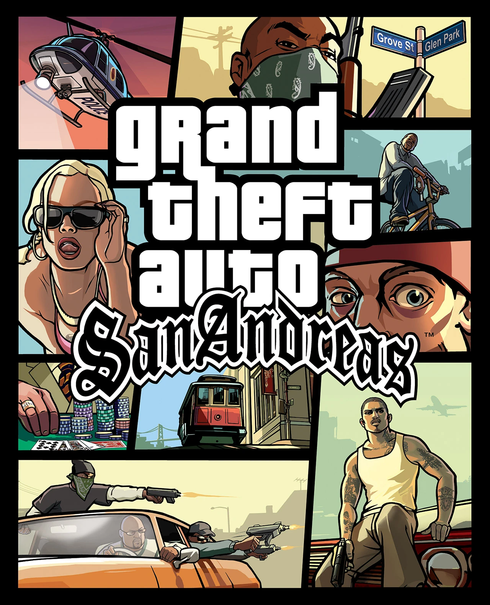
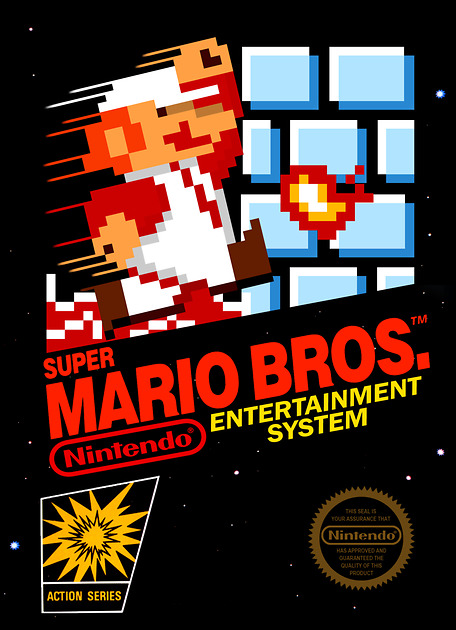

Grand Theft Auto: San Andreas

Gta Sa is one of Rockstar’s biggest successes in gaming. Before Gta 5, Online and all of the rest we had San Andreas. Rockstar’s fourth installment of the franchise offered players new ways of exploring the map and and even rpg elements such as character customization and overall stats improvements.
In this game we meet Carl “Cj” Johnson the main protagonist of this story who after 5 years spent in Liberty City must return upon learning of the death of his mother. Cj must now return to Los Santos and with the help of his friends and family find out who killed his mother…
| Statistiek |
Waarde |
| Graphics |
6/10 |
| Gameplay |
10/10 |
| Soundtrack |
20/10 |
| Verhaallijn |
10/10 |
Super Mario Bros.

Mario is without a doubt Nintendo’s golden boy, being one of the most recognizable and known fictional characters of all time.
While Mario officially started his career in 1981 in the arcade game Donkey Kong the plumber really shined in Nintendo’s classic and monumental Super Mario Bros. game that came out in 1985 and quite literally saved video games from disappearing forever because of the big video game crash of 1983.
In the first installment of the series we meet the two Italian plumbers Mario & Luigi who after learning that princess Toadstool has been kidnapped by Bowser, set off to go save her and the mushroom kingdom (whose inhabitants we’re all transformed into blocks, so you’re basically killing them when you hit the floating blocks).
| Statistiek |
Waarde |
| Graphics |
4/10 |
| Gameplay |
8/10 |
| Soundtrack |
9/10 |
| Verhaallijn |
5/10 |
Sonic Generations

This one was a tough one to choose… It was either this or Sonic 3 & Knuckles, but I chose Generations instead since its the one I loved most. Sonic Generations takes the best out of both worlds, it took the gameplay of the 2d sonic games and of the 3d ones and made one whole game out of it. Sega managed to surpass itself once more with this title in their beloved mascots franchise.
| Statistiek |
Waarde |
| Graphics |
10/10 |
| Gameplay |
9/10 |
| Soundtrack |
10/10 |
| Verhaallijn |
8/10 |